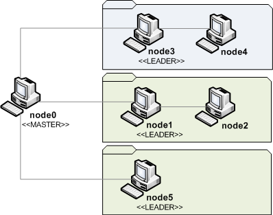

Project Links
Catalog
Other Links

Scopes constitution
In this tutorial, we will show you how the Cube agents are organized on scopes dynamically at runtime.
The actual implementation is based on a central master node which act as an index to the different scope leaders.
- Where to find and test the examples
- The final result
- The Archetype
- Cube Agent local configs
- Running the example
- Introspecting the Runtime Model
Where to find and test the examples
From the downloaded distribution of Cube in the following directory:
demo/getting_started/scopes
The final result
We want to have the following virtual organization.
We have one master node node0 which is just an index to the different scope leaders, and a set of nodes organized on scopes. We have two types of scopes BlueVirtualScope and GreenVirdualScope. You notice in the picture that there is two instances of the same type "GreenVirtualScope".
The Archetype
In this tutorial, we will have no constraints on nodes or components, but just the definition of the different scopes and nodes types, and the initial configuration of each cube agent.
Here is the correspondent archetype file located on:
demo/getting_started/scopes/demo.arch
<cube xmlns:core="fr.liglab.adele.cube.core">
<archetype id="net.debbabi.cube.demo.scopes" name="Scopes tutorial" version="1.0">
<types>
<core:scope id="BlueVirtualScope"/>
<core:scope id="GreenVirtualScope"/>
<core:node id="PC"/>
</types>
<constraints>
</constraints>
<global-configs>
<core:topscopeleader url="cube://localhost:38000"/>
</global-configs>
</archetype>
</cube>We have specified the aforementioned two scope types and one node type "PC". Notice, that we have also added the global config topscopeleader with which we specify the URL of the "master" node (it is node0 in our example).
Cube Agent local configs
Before launching the different nodes, have a look to the agent local config file for each node.
demo/getting_started/scopes/node1/load/cube.agent
<cube>
<agent>
<host value="localhost"/>
<port value="38001"/>
<archetypeUrl value="file:../demo.arch"/>
<debug value="false"/>
<extensions>
<extension id="fr.liglab.adele.cube.core">
<configurations>
<initializer>
<set-node id="node1" type="PC"/>
<set-scope id="gvs1" type="GreenVirtualScope"/>
</initializer>
</configurations>
</extension>
</extensions>
</agent>
</cube>In this configuration file we have general information about the host/port and the url of the archetype to be used. There is also a list of extension to be used by the agent. Here in this example, we use the core extension which manages the core model elements (scopes, nodes and components). We configure this core extension to initialize the node and scope objects with the given types.
See Cube Agent Documentation for further information.
Running the example
To start a node, go to its corresponding directory and type the following command under linux (other OS launching scripts will be available as soon as possible) :
$ sh ./init.sh
_______
/| |
| | CUBE |...Starting the CUBE Platform
| |______| 1.2.0-SNAPSHOT
|/______/
____________________________
Welcome to Apache Felix Gogo
[INFO] ... starting the CubeAgent: cube://localhost:38000
g!
Start the different nodes progressivelly. The following commands help to understand what hapens and to see the different created scopes and affectation of the their scope leaders (see the list of all available commands).
- exts
This command shows the differents running extension of the cube agent. In this example it will shows only the core extension:
g! exts -------------------------------------------------------------------------- - fr.liglab.adele.cube.core:1.2.0-SNAPSHOT -------------------------------------------------------------------------- g!
- ext extension_id
This commend shows the derail of the chosen extension. The core extension shows the different scopes. When running this command on the node0, it gives the following output:
g! ext fr.liglab.adele.cube.core:1.2.0-SNAPSHOT -------------------------------------------------------------------------- + CoreExtension + scopes.management - top.scope.leader.url: cube://localhost:38000/fr.liglab.adele.cube.core/topscopeleader - is.top.scope.leader: true - GreenVirtualScope | gvs1 | cube://localhost:38001/fr.liglab.adele.cube.core/scopeleader - BlueVirtualScope | bvs1 | cube://localhost:38003/fr.liglab.adele.cube.core/scopeleader - GreenVirtualScope | gvs2 | cube://localhost:38005/fr.liglab.adele.cube.core/scopeleader -------------------------------------------------------------------------- g!You notice that this node0 "is.top.scope.leader", and its internal index contains URLs of the different scope leaders, namely node1 scope leader of gvs1, node3 scope leader of bvs1 and node5 scope leader of gvs2.
However, when running the previous command on the console of the node3 for instance, it gives the following output:
g! ext fr.liglab.adele.cube.core:1.2.0-SNAPSHOT -------------------------------------------------------------------------- + CoreExtension + scopes.management - top.scope.leader.url: cube://localhost:38000/fr.liglab.adele.cube.core/topscopeleader - is.top.scope.leader: false - scope.leader.url: cube://localhost:38003/fr.liglab.adele.cube.core/scopeleader - is.scope.leader: true - cube://localhost:38003/fr.liglab.adele.cube.core/scopeleader - cube://localhost:38004/fr.liglab.adele.cube.core/scopeleader -------------------------------------------------------------------------- g!That is, as the node3 is a scope leader for bvs1 scope (of type BlueVirtualScope), it contains the list of the scope members; its self (URL: cube://localhost:38003) and node4 (URL: cube://localhost:38004).
Note: This output will be enhanced on future release of Cube framework!
Introspecting the Runtime Model
The particularity of Cube is that all the concepts are available as abstract element instances at runtime. We can introspect theme, and in the next of this getting started tutorial, we will show how to put constraints on theme. All what hapen on the runtime model is applied to the real nodes, and vise versa.
On one of the running nodes (node1 for instance), type the following command:
g! rm
This will show the Runtime Model Part of the current agent.
- cube://localhost:38001/objects/0 (fr.liglab.adele.cube.core.scope:GreenVirtualScope) [VALID]
localId:gvs1
NODES:
- cube://localhost:38001/objects/1 (fr.liglab.adele.cube.core.node:PC) [VALID]
localId:node1
COMPONENTS:
SCOPES:You notice that we have two object instances, the one representing the scope and the second representing the node itself.